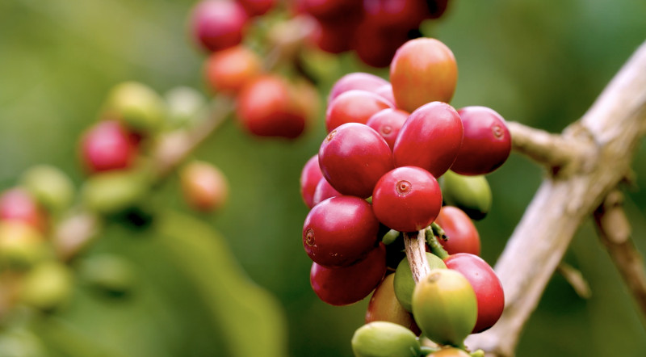

Các loại cà phê nổi tiếng ở Việt Nam

- Cà phê Arabica: Đây là một trong số các loại cafe ngon của Việt Nam có hạt hơi dài,
được trồng ở độ cao trên 600m. Ở nước ta arabica thường chỉ được trồng tại Lâm Đồng. Cà phê Arabica
có hai loại đang được nước ta trồng đó là Catimor và Moka. Moka có mùi thơm quyến rũ, vị nhạt; còn
Catimor có mùi thơm nồng nàn, vị hơi chua.
- Cà phê Culi: Một loại cà phê khác của nước ta có hạt tròn to bóng mẩy, đặc biệt so với các
loại cafe ngon khác là nó chỉ có một hạt duy nhất trong một trái. Cà phê culi vị đắng ngắt, hương
thơm say lòng người, nước đen sóng sánh.
- Cà phê Cherry (cà phê mít): Gồm có 2 giống chính là Liberica và Exelsa. Cafe Cherry được trồng
ở những vùng đất khô đầy gió và nắng của vùng Cao Nguyên nước ta. Hạt cà phê vàng, sáng bóng rất đẹp.
Cà phê Cherry dậy lên mùi hương thoang thoảng khi pha và có vị chua của Cherry tạo ra một cảm hứng thật
sảng khoái. Loại cafe này phù hợp với sở thích của phái nữ vừa tạo một cảm giác dân dã vừa sang trọng.
- Cà phê Moka (Đọc là Mocha): Cà phê Moka là một trong các loại cafe ngon thuộc chi Arabica, trồng tại
Đà Lạt, Lâm Đồng. Trong các họ cà phê thì loại này là giống khó trồng nhất; bởi khả năng bị sâu bệnh rất cao
đòi hỏi quy trình chăm sóc tỉ mỉ. Do vậy mà đây được xem là một loại cafe hiếm, giá thành cao hơn so với
các loại cafe khác.
- Cà phê Robusta: Hạt của cafe Robusta khá nhỏ, nhỏ hơn cả Arabica. Cà phê Robusta được sấy trực tiếp
chứ không phải lên men, chính vì vậy loại cà phê này có vị khá đắng, uống đậm đà, rất phù hợp với cánh đàn ông.
- Latte: Cà phê Latte (trong tiếng Ý có nghĩa là cà phê sữa), chúng ta rất dễ nhầm lẫn giữa vị của Latte
với Capuchino bởi cả hai loại này đều có 3 tầng là cà phê espresso, sữa nóng và bọt sữa. Tuy nhiên, ở Cappuccino
có lượng sữa nóng tương đương so với bọt sữa thì ở Latte, lượng bọt sữa chỉ bằng 1 nửa so với sữa nóng.
- Cà phê Moka: Cà phê Moka là một trong các loại cà phê khó trồng nhất tại Việt Nam, bởi khả năng chống lại
sâu bệnh thấp, đòi hỏi quy trình chăm sóc tỉ mỉ, loại này thường được trồng tại Đà Lạt, Lâm Đồng. Do quy trình trồng
trọt khó khăn nên đây được xem là một loại cafe hiếm, giá thành cao hơn so với các loại khác. Cà phê Moka trở thành
một món quà đặt biệt dành tặng nhau của những người sành cà phê.
- Cappuccino (capuchino): Cà phê Cappuccino không còn quá xa lạ đối với người dân Việt Nam, một tách cà phê gồm 3 tầng
thường được chia đều nhau: cà phê espresso, sữa nóng và bọt sữa.